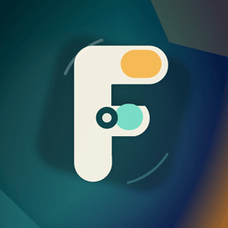

Die iOS-App für die eigene, selbst gehostete Fotosammlung der Familie.
F4mil Photos ist ohne einen eigenen, selbst gehosteten fk-encore-Server komplett wertlos. Die App ist ausschließlich der Client für dieses Backend, das jede Familie selbst betreiben muss – es gibt keine Cloud, keinen zentralen Anbieter und keine Registrierung bei uns. Ohne eine erreichbare eigene Server-Installation lässt sich in der App weder ein Konto anlegen noch ein einziges Foto hochladen, ansehen oder verwalten.
Wer die App installiert, ohne Zugriff auf einen eigenen fk-encore-Server zu haben, kann sie nicht sinnvoll nutzen. Sämtliche Verarbeitung – inklusive aller KI-Funktionen wie Gesichtserkennung und Bildsuche – läuft ausschließlich auf diesem eigenen Server, niemals in der App selbst und niemals bei einem Drittanbieter.